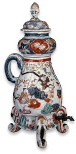

| |
How
are Japanese woodblock prints made?
What
is Japonisme?
How
are Japanese woodblock prints made?
The responsibility for producing a
woodblock print was shared between four people, sometimes referred to
as the Ukiyo-e 'quartet' of publisher, artist/designer, block-cutter
and printer. The publisher directed the work, commissioning an artist
to make a neat design on thin paper. This was then given to the block-cutter,
who pasted the design face-down on a cherry-wood block and carved the
complete design in relief (that is, leaving the outlines standing) and
back to front from the original. Any text was also carved in this way.
It was critical for the block-cutter to leave an L-shaped corner and
short border line (together called the kentô) as a guide for the printer
to register the printing accurately.

What
is Japonisme?
Europeans had developed an interest
in Far Eastern art, particularly ceramics, from the sixteenth century,
but Japanese art came to the fore from 1854 when the United States and
a number of European countries made treaties which forced Japan to open
to the outside world. Since Japan had little heavy industry, it used
the platform of several international exhibitions to promote the skills
of its artists and craftsmen (at the time, the Japanese did not distinguish
absolutely between 'arts' and 'crafts'). They quickly caught the imagination
of the West. A handful of significant individuals also promoted Japanese
art, such as Samuel Bing (1838-1905) who opened a Japanese objects shop
in Paris in the 1880s frequented, among others, by Vincent Van Gogh
(1853-90) and Toulouse Lautrec (1864-1901). Bing also published a periodical,
Le Japon Artistique.
|
|

Porcelain
coffee pot from Japan, Edo period, late 17th century AD
|
|
|
|